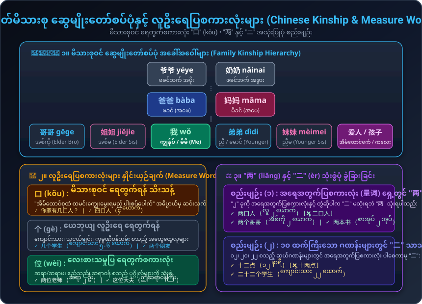
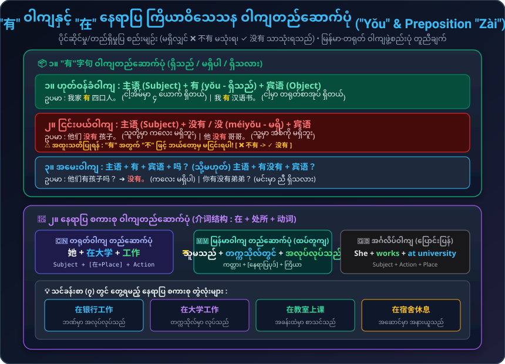

မိသားစုဝင် အခေါ်အဝေါ်များ၊ မိသားစု ရေတွက်စကားလုံး "口" (kǒu)၊ "有"字句 ပိုင်ဆိုင်မှုပြဝါကျ၊ "在" နေရာပြ စကားစုနှင့် "两" vs "二" ခွဲခြားသုံးစွဲပုံများ
မိသားစုဦးရေ၊ မိဘများ၏ အလုပ်အကိုင်၊ နေရာပြစကားစုနှင့် အိမ်ထောင်ရေး အခြေအနေ မေးမြန်းပြောဆိုချက်များ
မိသားစုအကြောင်း မေးမြန်းခြင်း၊ အလုပ်အကိုင်နှင့် မောင်နှမများအကြောင်း ဆွေးနွေးခြင်း
မိသားစု ဆွေမျိုးတော်စပ်ပုံ၊ လူဦးရေပြစကားလုံးများနှင့် "有" ဝါကျဖွဲ့စည်းပုံ သရုပ်ပြပုံကြမ်းများ

💡 မိသားစုဝင်များကို ရေတွက်ရာတွင် "口" (kǒu) ကိုသာ သုံးစွဲပြီး အထွေထွေလူများကို "个" (gè) သုံးသည်။ "၂" ကို အရေအတွက်ပြစကားလုံးနှင့် တွဲဆိုပါက အမြဲ "两" (liǎng) သုံးရသည်။

💡 "有" ၏ အငြင်းပုံစံမှာ "没有" ဖြစ်ပြီး "不有" မသုံးရပါ။ နေရာပြစကားစုတွင် မြန်မာစကားနှင့် တရုတ်စကားသည် ကြိယာရှေ့တွင် နေရာပြစကားစု ထားသည့် ပုံစံချင်း ထပ်တူကျပါသည်။
ကတ်တစ်ခုချင်းစီကို နှိပ်၍ မိသားစုဝင် အခေါ်အဝေါ်များ၏ အသံထွက်အစစ်ကို နားဆင်လေ့ကျင့်ပါ
စကားလုံးတိုင်းအတွက် Pinyin၊ မြန်မာအသံထွက်၊ အဓိပ္ပာယ်နှင့် စတူဒီယို အသံဖိုင်များ
တရုတ်ဘာသာစကား၏ ပိုင်ဆိုင်မှုပြဝါကျ၊ နေရာပြစကားစုနှင့် အရေအတွက်ပြ စည်းမျဉ်းများ
"有" (yǒu) သည် "ရှိသည် / ပိုင်ဆိုင်သည်" အဓိပ္ပာယ်ရပြီး အနောက်မှ ကံပုဒ် (Object) လိုက်ပါကာ ဝါကျဖွဲ့စည်းပါသည်:
⚠️ အထူးစည်းမျဉ်း: "有" ကို ငြင်းပယ်ရာတွင် "没" (သို့) "没有" သာ သုံးရပြီး "不" လုံးဝ မသုံးရပါ!
တရုတ်ဘာသာတွင် လုပ်ဆောင်ချက် မလုပ်ဆောင်မီ "ဘယ်နေရာမှာ" ဆိုသည့် နေရာပြစကားစုကို ကြိယာ၏ အရှေ့တွင် ထားရပါသည်။ ဤဝါကျဖွဲ့စည်းပုံသည် မြန်မာဘာသာစကားနှင့် ထပ်တူကျ ပါသည်:
| ဘာသာစကား | ကတ္တား (Subject) | နေရာပြပုဒ် (Location) | ကြိယာ (Action) | အသံဖိုင် |
|---|---|---|---|---|
| တရုတ် (Chinese) | 她 (Tā) | 在大学 (zài dàxué) | 工作 (gōngzuò) | |
| မြန်မာ (Burmese) | သူမသည် | တက္ကသိုလ်တွင် | အလုပ်လုပ်သည် | ✓ ထပ်တူကျ |
| အင်္ဂလိပ် (English) | She | works | at university | ↔ ပြောင်းပြန် |
အရေအတွက်ပြစကားလုံး (量词) ဖြစ်သော 口, 个, 本, 支 စသည်တို့၏ အရှေ့တွင် ၂ ကို ရည်ညွှန်းလိုပါက "两" သာသုံးရပါသည်:
ဆယ်ဂဏန်းများ (၁၂၊ ၂၀၊ ၂၂) တွင် အရေအတွက်ပြစကားလုံး ပါစေကာမူ "二" သာသုံးပြီး ရိုးရိုးဂဏန်းရေတွက်ရာတွင် "二" သုံးသည်:
၁ သံ + ၄ သံ ပေါင်းစပ်အသံထွက် လေ့ကျင့်ခန်းများနှင့် ရှောင်မင်း၏ မိသားစုပုံပြင်
ရှေ့စာလုံးကို မြင့်ညီညီ ဆွဲဆိုပြီး နောက်စာလုံးကို ခပ်ပြတ်ပြတ် အောက်သို့ ချဆိုပါ:
သင်ခန်းစာ (၇) မှ သဒ္ဒါနှင့် စည်းမျဉ်းများကို မိမိကိုယ်တိုင် စမ်းသပ်ဖြေဆိုကြည့်ပါ